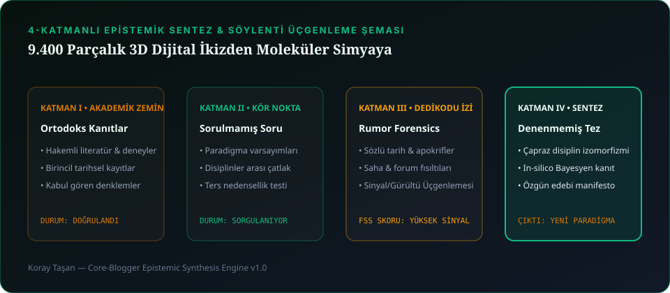

İnsanlar bazen koraytasan.com'un sol menüsünde gezinirken şaşırıyor: "Bir yanda sinema ve müzik var, hemen altında 9.400 parçalık 3D otomotiv simülatörü, onun yanında moleküler kimya laboratuvarı, emlak arama motoru ve kriptografik güvenli alan... Bunların birbiriyle ne alakası var?"
Cevabı çok basit: Hepsi birer sistem ve hepsi insan algısındaki bir kör noktayı çözmek için tasarlandı. Benim için bir film sahnesinin kurgusu ile bir Haldex dört çeker şasisinin tork dağılımı ya da bir ilaç molekülünün topolojisi arasında hiçbir fark yok; hepsi görünmeyen yasaların görünür kılınmasıdır. Gelin bu yaşayan web evrenlerimizin perde arkasındaki mühendislik savaşlarına birlikte bakalım.

1. BUILD UP BUILD DOWN: 9.400+ OEM CAD Parçasını Tarayıcıda 60 FPS Çalıştırmak
BUILD UP BUILD DOWN projesine başlarken hayalimiz şuydu: Ağır mühendislik yazılımları (CATIA, SolidWorks) kurmadan, doğrudan bir web tarayıcısında 1:1 OEM CAD doğruluğunda bir aracı en ince cıvatasına kadar söküp takabilmek (Digital Twin).
Sorun ve Çözümümüz: 9.400+ parça ve 5.000'den fazla bağlantı elemanını (fastener/cıvata) Three.js sahnesine tek tek Mesh olarak yüklediğinizde GPU her karede 14.000+ Draw Call yapmaya çalışıyor ve tarayıcı saniyesinde donuyordu. Bunu çözmek için tekrarlayan tüm bağlantı elemanlarını THREE.InstancedMesh matrislerine dönüştürdük ve şasi, motor (EA855 / 1.8T), Haldex kavraması ve süspansiyon alt gruplarını hiyerarşik bir sahne grafına (Scene Graph) bağladık. Sonuç: Sıfır kurulumla tarayıcıda yağ gibi akan interaktif bir mühendislik ikizi! Canlı simülatörü buradan deneyimleyebilirsiniz ↗
2. Find My Home: Dağınık İlan Sitelerinden 3D Uydu ve İkili Rota Eşleştirmesine
Türkiye'de ev arayan herkesin yaşadığı ortak bir işkence vardır: 4 farklı ilan sitesinde yüzlerce sekme açmak, ilandaki konumun gerçekte hangi yokuşta olduğunu anlayamamak ve "Eşim Levent'te çalışıyor, ben Kadıköy'de; ikimizin de toplu taşımayla 35 dakikada gidebileceği, aynı zamanda bütçemize uyan sokak hangisi?" sorusuna cevap bulamamak.
İşte Find My Home tam olarak bu kişisel isyandan doğdu. Tüm emlak portallarını tek bir çatı altında konsolide eden, 3D uydu keşif katmanı ve ikili ulaşım kesişim analitiği ile haritayı düz bir kağıt olmaktan çıkarıp yaşayan bir karar destek motoruna dönüştürdük.
3. ALKEM: Paracelsus'un Simya Kazanı ile RDKit Cheminformatics'in Buluşması
Merakımın en uç noktalarından biri de hermetik gelenek ile modern kimya bilişiminin (Cheminformatics) kesişimidir. 16. yüzyılda simyacılar her şeyi çözen evrensel bir sıvıdan (Alkahest) bahsederken modern bilim onlarla alay etti; ta ki 21. yüzyılda iki katı tuzun oda sıcaklığında karıştırılmasıyla sıvılaşan Derin Ötektik Çözücüler (Deep Eutectic Solvents - DES) keşfedilene kadar!
ALKEM (koraytasan.com/alkem/) laboratuvarımızda; moleküler ağırlık ve stokiyometri hesaplayıcılarını, cheminformatics araçlarını ve RxNorm farmakolojik etkileşim kataloğunu tek bir etkileşimli web arayüzünde birleştirdik.
4. IT'S US Safe Space & cor3us: "Kimse Kimseye Teslim Olmaz" ve Sıfır-GPS Mahremiyet
Modern sosyal ağlar insanları birbirine bağladığını iddia ederken aslında herkesi gözetleyen birer açık hava hapishanesine dönüştü. Bizim topluluk ve iletişim manifestomuz ise çok net:
"ITSUS'ta kimse kimseye teslim olmaz. Herkes, tek başına hükmetme hakkından vazgeçer. Dayatma yok, kural koymuyoruz; sadece sorabiliriz. Herkesin dilediği gibi var olduğu ama kimsenin yalnız bırakılmadığı yer."
— IT'S US Safe Space Manifestosu
Hem IT'S US Safe Space hem de kent kültürü platformumuz cor3us'u tasarlarken en büyük teknik sınavımız konum mahremiyeti oldu. Kullanıcıların şehirde birbirini ve "üçüncü mekânları" keşfetmesini istiyorduk ama sunucuda veya istemcide sıfır GPS sızıntısı (Zero-GPS Leakage) olmalıydı. Çözüm olarak tam koordinatları istemci tarafında kesip çift kademeli semt/grid bulanıklaştırması (Spatial Cloaking & Intent Grid) uygulayan bir mimari geliştirdik. Böylece kimse kimsenin tam sokak adresini göremez, ama aynı semtte aynı akşam kahve içmek veya sanat konuşmak isteyen iki insan güvenle karşılaşabilir.
5. Amblyopia DTx ve ARENA: Görsel Korteks Rehabilitasyonundan Kuantum Ekonomiye
- Amblyopia DTx (VR Nöro-Optik Terapi): Göz tembelliğinde (ambliyopi) beyin aslında "tembel" gözden gelen sinyali faz kayması yüzünden yazılımsal olarak susturur. VR başlık içinde her iki göze farklı kontrast ve fazda görüntü gönderen (Dichoptic Training) oyunlaştırılmış dijital terapimiz, yetişkin görsel korteksindeki (V1) nöroplastisiteyi yeniden uyandırıyor.
- ARENA & CarsiPazar: Bir yanda çift-rotorlu fizik yıkımı ve asimetrik oyun ekonomisi simülasyonu (ARENA), diğer yanda sürtünmesiz yerel ticaret mimarisi (CarsiPazar).